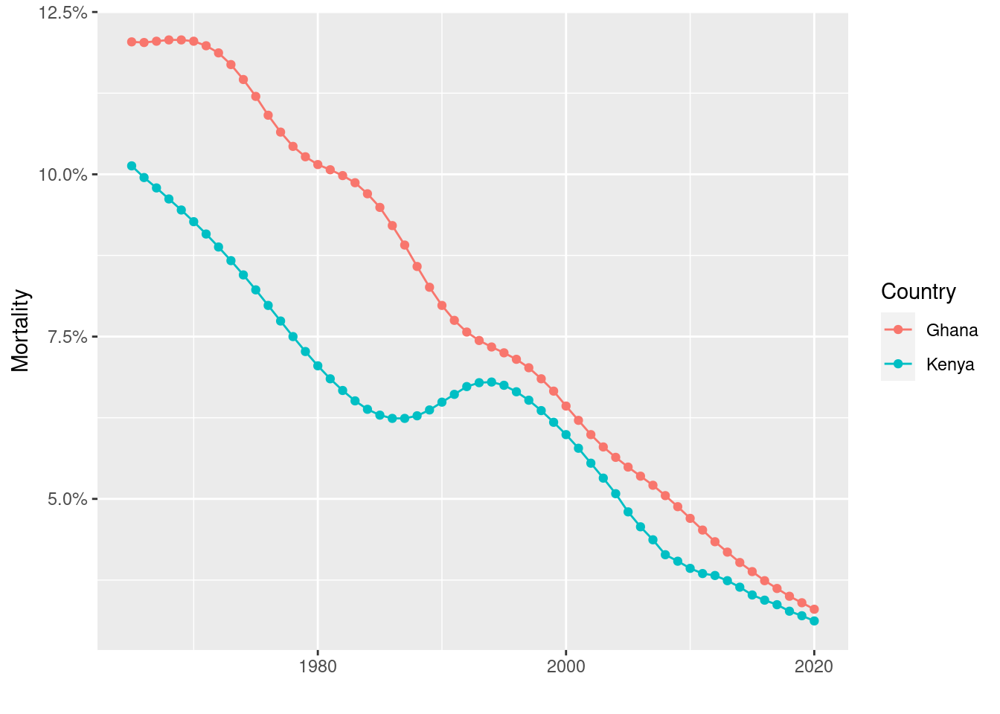

In the last exercise we analyzed data from the Demographic and Health Survey.1 We looked at data monitoring of the nutritional state of children by using anthropometric data.¶
1 To learn more about this survey, please visit the DHS website at https://dhsprogram.com/
The data allow for producing tables like - for example - the following from the DHS model data set we also used for an exercise in the previous section.
Percentage of stunted and wasted children by Region
Region
Stunted
Wasted
Region 1
0.34
0.11
Region 2
0.41
0.10
Region 3
0.30
0.10
Region 4
0.39
0.08
These percentages are calculated from measurements of 2494 observations. Now even a small region in a thinly populated area will have more children than that. For instance the tiny European state of Liechtenstein, a small 62 square miles sliver of land between Austria and Switzerland has currently about 38.000 inhabitants. To a rough approximation even there the number of children under 59 month - the group for which the anthropometric measurments of the DHS were taken - is about this size or larger.
The data of the demographic and health survey are collected by selecting some households in a country and asking questions to their members or by taking measurements from them. Surveys are huge and expensive projects which require complex logistics to work properly. The researchers in such a project are not interested in what particular respondents say or what are their particular anthropometric data are. In fact the individual respondents are anonymous in the collected data set. The questions are asked to find overall patterns in - for example - the nutritional status of children and infants in a country or in an administrative region.
But how can we say something about such a pattern in a country or a region by just asking a group of people or by taking some measurements from them? How can we be confident about the results beyond just claiming that we can generalize from the data of people we asked to the population pattern we are ultimately interested in? How can we ask or measure people in a way that the analysis of data from this subset allows to learn something about these measures in the entire population?
In this chapter we discuss how such a seemingly magical generalization can work at all and what needs to be considered before making such sweeping generalizations with some level of confidence.
The process of going from responses or measurements in a survey to patterns in a country or region proceeds in four stages as explained in Spiegelhalter (2019). We follow here his four stages taking the he DHS as an example.
Stage 1:
In the first stage of the data collection process the DHS a group of households is selected from the larger population about which we want to learn something. In technical terms the selected group is called a sample and the larger population about we ultimately hope to learn something is called the target population. The sample and all the successful and failed measurements in the sample will give us the raw data. From this we can get information about …
Stage 2:
The true numbers of height and weight in our sample, which contains information about …
Stage 3:
The height and weight in the study population, the people that could have potentially been included in the survey, which contains information about …
Stage 4:
The height and weight of children in our target population.
It is important to understand that at all these stages errors can occur.
For example on the way from the raw data to our sample - the step from stage 1 to stage 2 - we have to make assumptions on how accurately the field workers have taken their height and weight measurements. Or if we ask questions, we need to make assumptions on how accurately people respond.
When we go from the sample to the study population - from stage 2 to stage 3 - we need to be confident that the people asked or measured are a random sample from those who could be asked in principle. We have not yet introduced probability and what we mean exactly with a random sample. But at this stage it is sufficient to rely on our intuitive understanding of what random means and why it is important. Assume the sample had not been selected at random. Say the DHS survey team would drive through a region and stop here and there to interview households. This method risks that some households are much more likely to be in the sample than others - for example the ones who are easy to reach on the road. Then in going from 2 to 3 we will make mistakes because we will measure using a sample that is not comparable to the study population. Even worse we can not even quantify the error we are making.
Now if a survey is done properly and professionally, as we can be confident with the DHS, we can usually assume that a proper random sample has been chosen. But even then we need to assume that the people who agree to take part in the survey, those in our sample that cooperate with the survey team, i.e. answer questions, agree to have anthropocentric measurements taken of their children, are representative. Otherwise comparisons with the larger group about which we ultimately want to say something, will be problematic. Assuring that the people in the sample who cooperate are representative is more difficult to assure. There are methods and procedures to address this difficulty systematically. For the moment it is important for you to recognize this as a potential source of error.
When we assume that the people who could potentially have been asked to participate in the survey represent the population of a country or a region, then the last step - going from stage 3 to stage 4 - is more straightforward. If the sample has been chosen with sufficient care this will be possible. It is, however, not easy in practice.
Considering all these potential sources of error you might become skeptical whether it is possible to say something reliable from limited data about the population at all. The good news is that statistics as a science and the methods you are going to learn during this course can smooth and control the process of going through these four steps where you indeed can say something very reliable and you can even precisely quantify the uncertainty that remains in what you are saying.
4.1 Learning from data and the process of inductive inference.
In the preceding chapters we have looked at examples where we had given data. Analysis of this data was sufficient if we just appropriately summarized them or displayed the data in an insightful way.
Sometimes this is really all there is to do. For instance when we studied the time trend in infant mortality we just looked at the time series of mortality data and a plot showed us the complete answer. The data we previously plotted for Ghana and Kenya - for example - show a steady decrease since 1965 starting from a share of roughly 12 % down below 2 % in 2020. These are data from public registers and not samples. The data are based from a complete set of observations in a country.
Code
library(ggplot2)library(JWL)pl_dat <-with(infant_mortality_data, infant_mortality_data[Country %in%c("Ghana","Kenya") & Year >=1965, ])p <-ggplot(pl_dat, aes(x = Year, y = Mortality, color = Country)) +geom_point() +geom_line() +xlab("") +scale_y_continuous(labels = scales::percent)p

But sometimes we want to say more about the data. We would like - for instance - to make predictions on how, for example, the trend in this share is going to look like in the future where we do not yet have data.
Or maybe we would like to say something more basic. For example why did the share show a long term downward trend in those countries.
Such generalisations, where we try to learn something about the world outside of our observations, based on these observations are called in statistics inductive inference. Inductive inference is a challenging idea and it had been the topic of many philosophical and methodological controversies among scholars in the past.
Deductive reasoning derives particular conclusions from general premises using the rules of logic. In this way if the assumptions hold and the reasoning is done correctly, i.e. the rules of logic are properly applied the conclusions is certain and irrefutable. A toy example of deductive reasoning would for instance be:
Major Premise: All plants perform photosynthesis.
Minor Premise: A cactus is a plant.
Conclusion: A cactus performs photosynthesis.
Modern mathematical reasoning is all built on deduction, allowing to come up with actual proofs of certain statements given a set of axioms or assumptions. A proof is possible because deduction is logically certain.
Inductive reasoning works differently. It starts from particular instances and tries to work out generalizations from there. It goes from data to hypothesis. A simple toy example for inductive reasoning would be:
Data: I see fireflies in my garden every summer.
Hypothesis: This summer I will probably see fireflies in my garden.
Induction does not allow to proof a hypothesis because it is generally uncertain.
Let us go back to the entire process of going from the raw data to the statements about the entire country or region in the DHS survey.
When we go from the sample to the true data about the units in the sample, the step from stage 1 to stage 2, we have to think careful about issues or problems of measurement. We want to know whether our data are reliable. They should have a low variability from occasion to occasion and should measure the same thing when we repeat a measurement. They should also measure what we intend or want to measure. This is called validity. We do not want our data to have a systematic bias.
When we take again the DHS as an example, where people are asked many questions and quite a few measurements are taken on individuals, questions should be such that people give the same or a similar answer each time they are asked this question. To some extend this can be tested but these tests are not perfect. We also need to assume that people answer honestly to questions. With measurements things are similar. We want that we get the same or a very similar result if we repeat a measurement and we need to assume that the survey field workers who take the measurements do their job diligently.
If questions would be biased towards a particular answer a survey would also not be valid. This needs special care in developing questions. In lecture 1 we have learned about framing effects. Framing effects are often used in marketing. For example in meat packaging it is well known that how you report certain facts about the packaged meat influences sales. If the same piece of meat is one time packaged with the text “75 % lean meat” and the other time with the text “25 % fat”, which is logically the same information, several studies showed that on average the first package is preferred. This and other details have to be considered when elicting information from the sample.
Now going from the second stage - from the sample - to the third stage - the study population requires particular care. We have to be confident that the sample observed accurately reflects characteristics of the larger group we are ultimately interested in and from which the sample has been taken. Technically this is also often called internal validity.
Here we come to a crucial idea how bias can be avoided, the idea of random sampling. Let us explain exactly what a random sample is. Using R will support us in developing this understanding. As an example data set of our population we use as an illustration in the following discussion, let us take the dataset on the height and weight of adult humans, we used in the previous section.
Remember that this was a data set with 25.000 observations and three variables, an index for each individual a number of height in cm and weight in kg.2. Let’s look at the first 10 rows in this dataset.
2 Note that the original data set socr_height_weight measures height in inches and weight in lbs. To get cm from inches, we have to multiply by 2.54 and to get kg from lbs we have to multiply the numbers by 0.4535924. In the data we use here we use units of cm and kg
Code
show <-head(dat, n=10)rownames(show) <-NULLknitr::kable(head(show, n=10))
Index
Height
Weight
1
167.0896
51.25254
2
181.6486
61.90960
3
176.2728
69.41184
4
173.2702
64.56226
5
172.1810
65.45207
6
174.4925
55.92903
7
177.2972
64.18092
8
177.8374
61.89826
9
172.4727
50.97122
10
169.6272
54.73372
Each row of this table represents an individual. Each individual here is an adult person age 18 or more for which a measure of height and weight has been taken. So if we sample from the rows of this table, we get values for the index, the height and the weight of individuals.
We could now take samples of rows from the table by selecting every 50th row. Here is a way of how we could implement this in R. If you go back to our last section and remember what we have learned about subsetting, you might get an idea how to approach such a problem.
Let us first create a sequence of numbers starting from 1 and going until the last row in steps of length 5. This can be done without problems because 25000 rows are divisible by 50 and this procedure will select exactly 500 rows. Here is the R code:
idx <-seq(from =1, to =nrow(dat), by =5)sample_1 <- dat[idx, ]rownames(sample_1) <-NULLknitr::kable(head(sample_1, n =5))
Index
Height
Weight
1
167.0896
51.25254
6
174.4925
55.92903
11
168.8787
57.81108
16
180.5727
63.50180
21
172.2978
64.08385
Let me explain. seq() is an R function which creates a regular sequence of numbers. The arguments specify where the sequence begins and where it ends as well as the step length it takes. We write this sequence into a variable idx. Since we do not want row names we delete these. Then we apply the subsetting rules we have learned in the last section to select all rows with index idx with all its variables.
While this is a sample from our population, this is not a random sample because there is no chance involved in selecting the rows. Random sampling is a sampling method that uses a random mechanism. This means that the probability of each unit in the population to become part of the sample is known.
We have not yet discussed the concept of probability. We will learn about probability later in the course. But we have all am intuitive notion of probability from simple games of chance, such as from rolling a die. If we throw a die the probability of each of the points - 1, 2, 3, 4, 5 or 6 - showing up is \(\frac{1}{6}\). When we can give a probability for each outcome of throwing a die, we have a probability distribution, which is in this particular example very simple. The probability of each number showing up is the same, \(\frac{1}{6}\). We can show this in the form of a bar-plot, where each bar stands for an outcome and its height showing the probability of this outcome.
In contrast to this theoretical probability distribution an empirical distribution is the distribution of observed data. We encountered many such distributions in the previous sections and and we have learned how to summarize them graphically by histograms.
The computer allows us to create empirical distributions of results from throwing a virtual die. It is a simulation of a real situation where you would actually roll a six sided die. This is an example which allows us to introduce some new functions and concepts in R, which we will need in the rest of the course.
First we create a virtual die by defining an appropriate R object. This die should represent a physical die, which you know from games of chance.
A die
The essential feature of the die is that it has six faces each showing different points starting from 1 to 6. In R we implemeng this by creating a vector of integers 1 to 6, like this
die <-1:6
Now R has a buit in function, called sample() which can pick values at random from an object. We can tell R by using this function for instance that it should randmoly pick a number from the six possible numbers of die. This is how it works:
sample(x=die, size =1)
[1] 3
The R-function sample() takes an object as argument. The second argument, called size, specifies the number of random picks or draws from the object. If we give the value 1 to size it is as if we threw the die once.
One feature that makes R so very powerful is that you can not only use built in functions, like mean, histsample etc. but you can also write your own functions. We could for instance write a function which rolls a die if we call it.
Each function in R has the same elements: A name, a function body of code and a set of arguments. To write your own function, you have to write up all of these parts and save them in an R object.
The syntax is given like this:
my_function <- function() {}
The name here is my_function, next comes the expression function() which needs to be assigned. The names of the function arguments have to be written between the parentheses. Then we have to write the actual code within the braces {}.
To do this for the die, lets write a function named roll_die
Now we have written the function and saved it as an R-object we can call it like this. Let’s call it three times for example:
Code
#| code-fold: falseroll_die()
[1] 6
Code
roll_die()
[1] 2
Code
roll_die()
[1] 4
Now we are interested in an empirical distribution of points if we roll the die many times. A built in R function that would help us to do this is the function replicate(). This function needs two arguments, how many times it should do something and of course what it should do precisely.
So if we roll our virtual die 10 times, we would tell R to do this:
r10 <-replicate(10, roll_die())r10
[1] 3 1 6 6 6 4 4 4 4 3
which gives us the sequence of results from these 10 rolls. Now let’s plot the empirical distribution.
Spiegelhalter, David. 2019. The Art of Statistcis: Learning from Data. Pelican Books.